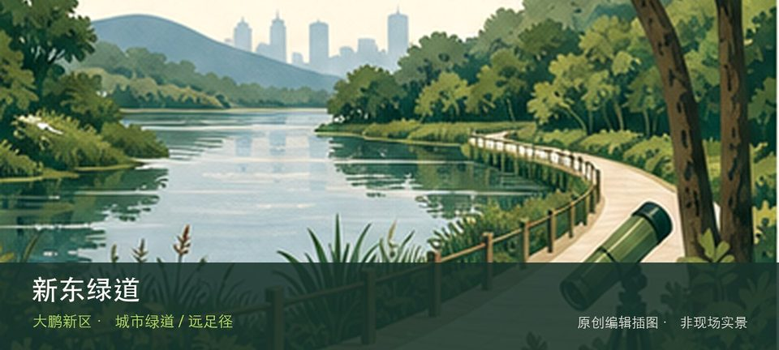

适合谁
适合海岸观察、轻量步行和愿意服从海况边界的人；不适合追逐未开放穿越线。

SHENZHEN GUIDE · 309
新东路西入口至鹿咀山庄 · 城市绿道 / 远足径
新东绿道位于新东路西入口至鹿咀山庄，约12公里的滨海特色线路以蓝色路面、七娘山和鹿咀海景组织骑行与徒步体验。把注意力放在鹿咀滨海视野和七娘山山海背景，能避免只凭名称或网红照片判断这里。海岸体验取决于鹿咀滨海视野与七娘山山海背景当天的风浪、潮位和运营边界，不宜把旧照片当成实时承诺。先确定安全退路和返程节点，遇雷雨、台风影响或封闭提示就缩短行程。
WHY GO
适合海岸观察、轻量步行和愿意服从海况边界的人；不适合追逐未开放穿越线。
首次游览新东绿道不求走全，先完成鹿咀滨海视野这一项观察，再根据同行者体力选择七娘山山海背景，并保留原路退出方案。
公交M274、M423或大鹏半岛假日专线3号到新东路一带；先核对末端接驳和返程。
自驾只使用新东绿道官方或片区正规停车场；海滨旺季先查预约、限行和接驳，满位后不要在村道或应急通道等候。
10 月至次年 4 月体感较舒适；夏季亲水先查海况，雷暴、台风影响或大浪提示下不靠近水线。
NEARBY IDEAS
 编辑配图·非现场实景
编辑配图·非现场实景
桔钓沙位于南澳新大，细沙海湾、度假设施和帆船活动按经营边界组织，入口、票务和停车可能与周边酒店或基地联动。
 授权实景图
授权实景图
杨梅坑位于南澳东部海岸，溪谷入海、沿海道路和通往鹿嘴方向的山海景观吸引大量客流，道路承载和天气会直接改变接驳方式。
 编辑配图·非现场实景
编辑配图·非现场实景
禾塘山水绿道位于金岭路后山至奔康工业区，约3公里的生态康养线路通常07:00—20:00开放，以亚公岭、管委会后山和丰树山林地构成轻徒步。